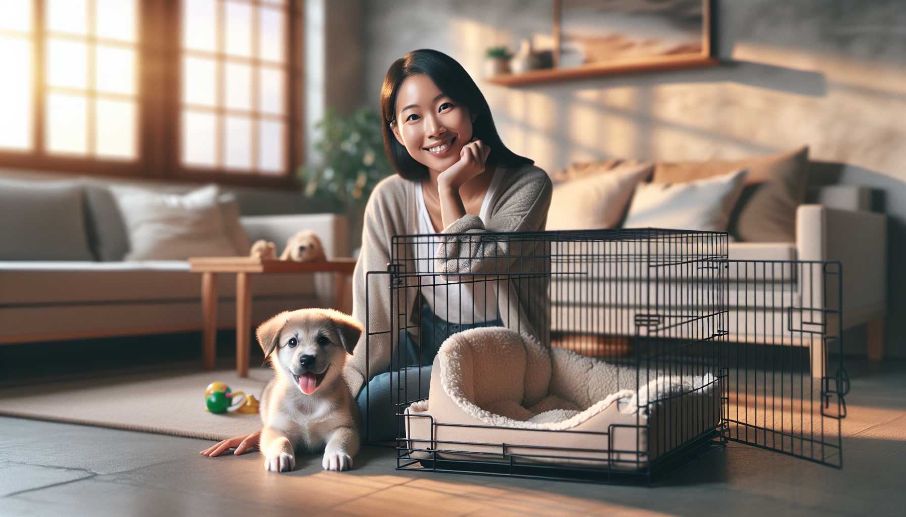

Bringing home a new puppy is exciting, adorable, and often a little overwhelming. Between potty accidents, nighttime whining, chewing, and helping your puppy feel safe in a brand-new environment, the first few weeks can feel like a full-time job. One of the most useful tools you can use during this transition is crate training.
When done correctly, crate training is not about punishment or isolation. It is about creating a safe, comfortable den-like space where your puppy can rest, relax, and learn healthy routines. A crate can support house training, prevent destructive chewing, make travel safer, and give your puppy a predictable place to settle.
This complete guide will walk you through how to crate train a new puppy in a way that is humane, science-backed, and realistic for everyday dog owners. Whether you are a first-time puppy parent or adopting a rescue pup who needs structure, these steps will help you build positive crate habits without fear or force.
Dogs are not den animals in the strict scientific sense, but many puppies naturally seek out small, enclosed spaces when they want to rest and feel secure. A properly introduced crate can become that safe zone. The key is that the crate must always be associated with comfort, rest, and positive experiences.
Crate training can help with several common puppy challenges:
House training: Puppies are less likely to eliminate where they sleep, which helps teach bladder control and routine.
Safety: A crate keeps your puppy away from electrical cords, toxic items, stairs, and chewing hazards when you cannot supervise.
Rest and recovery: Puppies need a lot of sleep, often 18 to 20 hours a day. A crate can reduce overstimulation and encourage naps.
Travel and vet visits: Crate comfort makes car rides, boarding, and medical recovery less stressful.
Independence: Puppies who learn to settle alone are less likely to develop distress when separated from their owners.
Used well, the crate becomes a management tool and a confidence-building space, not a place your puppy dreads.
The best crate is one that is safe, appropriately sized, and easy to make comfortable. Most new puppy parents choose either a wire crate with a divider or a hard-sided plastic crate. Wire crates offer airflow and flexibility as your puppy grows. Plastic crates can feel more enclosed and cozy for some dogs.
Your puppy should be able to stand up, turn around, and lie down comfortably, but the crate should not be so large that one end becomes a bathroom area and the other a sleeping area. If your puppy will grow significantly, use a divider panel to adjust the space over time.
Set the crate up in a part of the home where your puppy can still feel included. During the day, that may be a living room or home office. At night, many trainers recommend placing the crate near your bed at first. This can reduce anxiety and help you respond quickly if your puppy needs a potty break.
To make the crate inviting, include:
Comfortable bedding, if your puppy does not chew or shred fabric
A safe chew toy or food-stuffed enrichment toy
A light crate cover if your puppy relaxes better in a darker environment
Fresh water only when appropriate and safe for your setup
Avoid adding anything unsafe, loose, or easily swallowed. Safety always comes first.
The biggest mistake people make is putting a puppy into a crate, closing the door, and hoping they “get used to it.” That approach often creates fear, frustration, and resistance. Instead, introduce the crate gradually and pair it with things your puppy loves.
Start with the door open. Toss a few treats just inside the crate and let your puppy go in and out freely. Praise gently. Feed meals near the crate, then just inside it, and eventually in the back of the crate as your puppy becomes more comfortable.
Try these early steps:
Scatter treats in the crate so your puppy chooses to explore
Use a cheerful cue like “crate” or “bed” as they go in
Offer stuffed Kongs or safe chews only in the crate
Sit nearby while your puppy eats or relaxes inside
Close the door briefly for a few seconds, then open it before your puppy becomes upset
Your goal is to teach your puppy that the crate predicts good things. Keep sessions short and successful. If your puppy shows stress, such as frantic pawing, barking, drooling, or trying to escape, go back a step and make the process easier.
Every puppy is different, but structure helps. In the first days and weeks, think in terms of short sessions and gradual progress rather than long crate stays.
Step 1: Open-door exploration
Let your puppy investigate the crate on their own. Reward any interest.
Step 2: Short closed-door sessions
Once your puppy enters willingly, close the door for 5 to 10 seconds while you remain nearby. Reward calm behavior and release before distress begins.
Step 3: Increase time slowly
Build up to 30 seconds, 1 minute, 3 minutes, and 5 minutes with you sitting next to the crate. Give a chew or food toy to help your puppy settle.
Step 4: Add distance
Move around the room, then briefly step away and return. Keep departures and returns calm and low-key.
Step 5: Practice naps in the crate
After play, training, or a potty break, guide your puppy into the crate for a rest period. Puppies are more likely to settle when their needs have been met first.
Step 6: Build nighttime comfort
Use the crate for sleeping overnight, but expect that very young puppies will still need potty breaks.
A general guideline is that young puppies can only hold their bladder for short periods, often about one hour per month of age during the day, though individual needs vary. Overnight, some puppies can last longer, but many still need one or more outings at first. Do not expect too much too soon.
Crate training works best when paired with a consistent potty routine. The crate does not teach house training by itself. Your puppy learns because you use the crate to prevent accidents and then reward elimination in the right place.
Take your puppy outside:
First thing in the morning
After naps
After meals and drinking
After play sessions
After time in the crate
Before bedtime
When your puppy potties outside, reward immediately with praise, treats, or both. If your puppy has an accident indoors, clean it thoroughly with an enzymatic cleaner and adjust your management plan. Punishment can create fear and confusion, especially if your puppy does not understand what they did wrong.
Think of the crate as one part of a larger routine: potty, play, training, rest, repeat. Puppies thrive on predictability.
Even with a thoughtful plan, most puppies hit a few bumps along the way. The good news is that these issues are common and usually manageable.
Whining in the crate: First, make sure your puppy has had a potty break, exercise, and enough comfort. If all needs are met, wait for a brief pause in whining before calmly rewarding or releasing. If you always let your puppy out while they are actively vocalizing, you may accidentally reinforce the behavior.
Refusing to enter the crate: Go back to basics. Use higher-value treats, feed meals in the crate, and avoid forcing your puppy inside. Choice builds confidence.
Settles only when you are nearby: Practice tiny absences. Step away for one second, then return. Gradually increase duration so your puppy learns that you always come back.
Accidents in the crate: Reevaluate crate size, potty frequency, and cleaning methods. Puppies should not be left crated longer than they can physically manage.
Chewing bedding or crate bars: Remove unsafe bedding, provide appropriate chew outlets, and ensure your puppy is not bored, overtired, or under-stimulated.
If your puppy shows intense panic, self-injury, or severe distress in the crate, consult a qualified positive reinforcement trainer or a veterinary behavior professional. Crate training should not involve flooding or forcing a puppy to “cry it out” for long periods.
The crate is a tool, not a storage space for your dog. To keep crate training healthy and ethical, follow a few simple rules.
Never use the crate as punishment
Meet your puppy’s physical and emotional needs before crating
Provide enough exercise, enrichment, sleep, and social interaction
Keep crate sessions age-appropriate and gradually increased
Continue creating positive associations even after your puppy is trained
Give your puppy non-crate downtime with supervision and training
Remember that the long-term goal is not to keep your dog crated forever. The goal is to teach calmness, safety, and routine while your puppy matures. Over time, many dogs earn more freedom in the home as they become reliable and emotionally secure.
Crate training a new puppy is one of the most practical skills you can teach, but success depends on how you introduce it. When the crate is paired with safety, comfort, food, rest, and patience, most puppies learn to accept it and many come to love it. When it is rushed or used as punishment, it can quickly become a source of stress.
Go at your puppy’s pace. Keep sessions short. Reward generously. Use the crate as part of a bigger plan that includes house training, enrichment, sleep, and predictable routines. With consistency and a science-backed approach, you can help your puppy feel secure, sleep better, and build habits that last for life.
Want more step-by-step help with puppy training, behavior, and everyday dog manners? Get our full Dog Training eBook series — new titles added weekly.